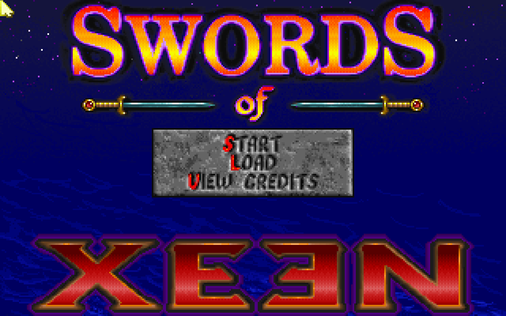
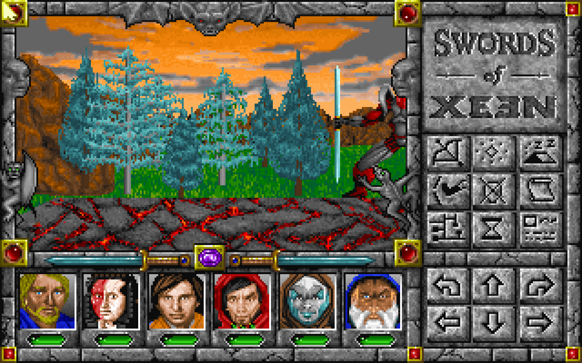
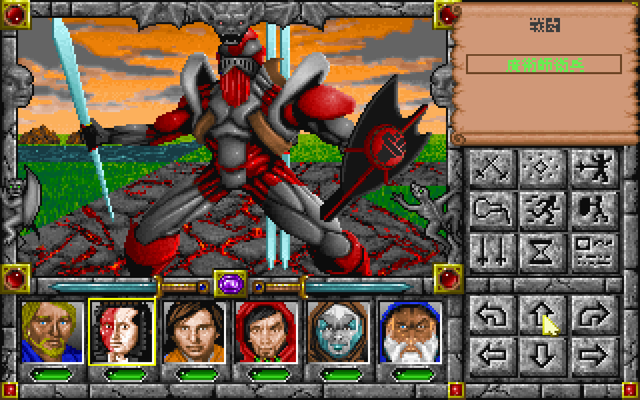
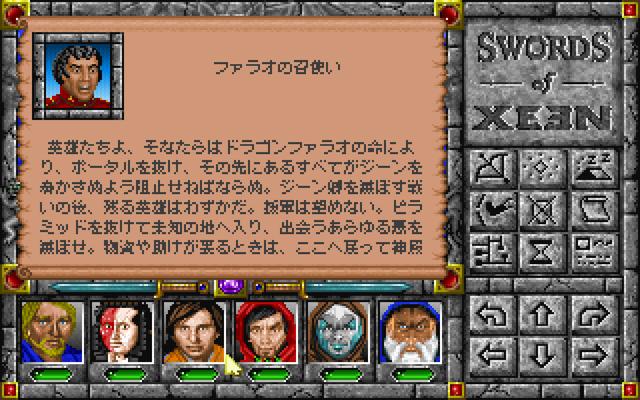
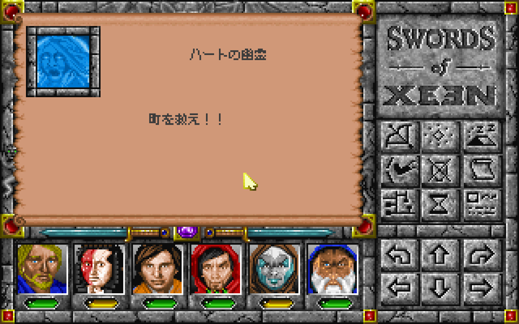
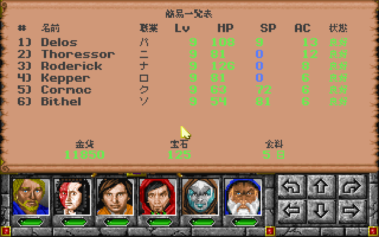

どんなゲーム？
「ソード・オブ・ジーン」（1995年）は、ワールド・オブ・ジーンと同じ仕組みで作られた外伝です。 ジーン卿との戦いを生き延びた英雄たちは、ドラゴンファラオの命を受けてポータルを抜け、見知らぬ土地へ向かいます。
はじめからレベル9の6人のパーティーで旅が始まります。魔物に襲われたハートの町を救い、ピラミッドや塔、地下迷宮をめぐって、 この地を脅かす悪の正体に迫ります。
Might and Magic: Swords of Xeen
GOG.com 版の「Might and Magic - Swords of Xeen」を日本語で遊べるようにする、非公式のファンメイドパッチです。 町の人や賢者との会話、看板や碑文、謎かけ、冒険の記録、呪文の説明、メニューやメッセージ、 品物・呪文・怪物・地名の名前まで、ゲームの中の文章を日本語にしています。 ゲームのフォルダにファイルを置くだけで、ゲームのファイルは書き換えません。
「ソード・オブ・ジーン」（1995年）は、ワールド・オブ・ジーンと同じ仕組みで作られた外伝です。 ジーン卿との戦いを生き延びた英雄たちは、ドラゴンファラオの命を受けてポータルを抜け、見知らぬ土地へ向かいます。
はじめからレベル9の6人のパーティーで旅が始まります。魔物に襲われたハートの町を救い、ピラミッドや塔、地下迷宮をめぐって、 この地を脅かす悪の正体に迫ります。






SwordsOfXeen_JP.zip を展開します。SWRD.CC があるフォルダ）にコピーします。日本語版は、同梱の ScummVM（日本語の表示を足した非公式ビルド）で動きます。GOG 版に付いている DOSBox は使いません。 GOG 版の英語版も、これまでどおり遊べます。
xeen_ja.dat、.bat、ScummVM-XeenJP フォルダなど）と、セーブデータの SCUMMVM_SAVES_JP フォルダを消してください。ScummVM-XeenJP フォルダの scummvm-xeenjp.ini に書き込まれ、次の起動でも使われます。SCUMMVM_SAVES_JP フォルダに保存されます（GOG 版の DOSBox のセーブとは別です）。誤訳や不自然な訳に気づいたら、GitHub の Issues で教えてください。